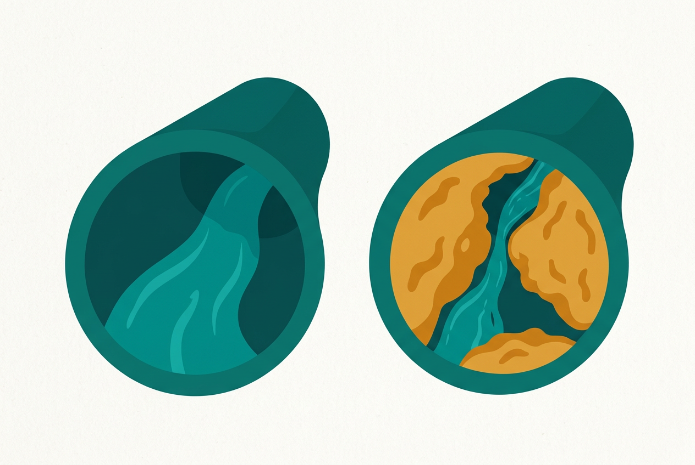
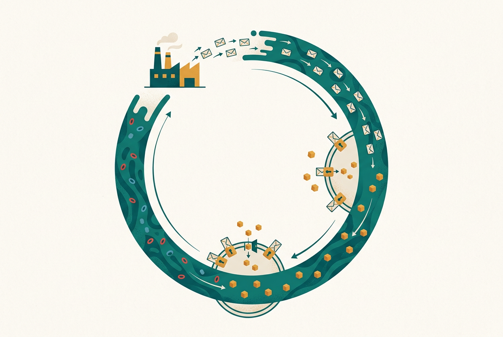

心脏和血管：一台泵 + 一套水管网络
心脏是一台每天跳动约十万次的泵，血管是总长可以绕地球两周以上的管道网。血液在这套管网里循环，把氧气和营养送到每个细胞，再把废物运走——你身上任何一个器官出问题，最后都会反映到这套运输网上。
血压就是"水对管壁的压力"：心脏收缩往管子里泵水的瞬间，压力最高（高压/收缩压）；心脏舒张歇一口气时，压力最低（低压/舒张压）。管子变窄、变硬、水量变多，压力都会升高——这就是高血压的物理直觉，也是为什么它早期毫无感觉：水管压力高一点，你是感觉不到的，但管壁在默默受损。
不用背名词的生理速览：八大系统各管什么、系统之间怎么协作、衰老是怎么回事——后面所有疾病章的"原理地基"
怎么用本章：不必背任何名词。每个系统记住一个比喻（水泵、化工厂、军队、电缆、筛子……）即可；比喻后紧跟"这个系统坏了会得什么病、对应体检单哪个指标"，并给出跳转链接。第一次读建议通读一遍；之后各章遇到"原理看不懂"时，回到这里查对应小节即可。
一套泵+管道负责送货，一套风箱负责换气——它们是全身所有器官的后勤线
心脏是一台每天跳动约十万次的泵，血管是总长可以绕地球两周以上的管道网。血液在这套管网里循环，把氧气和营养送到每个细胞，再把废物运走——你身上任何一个器官出问题，最后都会反映到这套运输网上。
血压就是"水对管壁的压力"：心脏收缩往管子里泵水的瞬间，压力最高（高压/收缩压）；心脏舒张歇一口气时，压力最低（低压/舒张压）。管子变窄、变硬、水量变多，压力都会升高——这就是高血压的物理直觉，也是为什么它早期毫无感觉：水管压力高一点，你是感觉不到的，但管壁在默默受损。
血液里的低密度脂蛋白胆固醇（俗称"坏胆固醇"）如果长期偏多，会渗进血管内膜下面堆积起来，形成像水垢一样的斑块，管腔变窄、管壁变脆——这个过程叫动脉粥样硬化。它进展极慢、毫无症状，但结局很响：堵在心脏的血管叫冠心病，堵在脑子叫脑卒中（详见第5章）。
理解这一点，你就能看懂体检单上为什么盯住血脂不放，也明白"血管年龄"为什么可以比实际年龄老二十年。好消息是：水垢形成的速度，很大程度上由你能控制的东西决定——吃什么、动多少、抽不抽烟（详见第14章）。

气管像一棵倒着长的树，越分越细，末端挂着约3亿个肺泡——把肺泡摊开，面积接近一个网球场。氧气在这里穿过一层极薄的膜进入血液，二氧化碳反向排出，这就是"气体交换"。肺炎就是肺泡被感染后充满了渗出液，换气面积不够用了，所以会缺氧、气促（详见第7章）。
同一棵树的上游——咽喉，是空气和食物的岔路口。吃饭时说笑，食物可能误入气道把岔路堵死，几分钟内致命；这就是为什么海姆立克急救法值得每个成年人学会（详见第4章）。
血液不是一种液体，而是一支车队：血浆是承载一切的河水（水＋蛋白＋激素＋废物），里面跑着三种车。红细胞是运氧卡车，靠血红蛋白把氧气从肺送到全身——卡车不够就是贫血，人会乏力、头晕、脸色苍白，女性月经期、消化道慢性失血、营养不良都是常见原因。白细胞是国防军的巡逻车，细菌感染时总数和中性粒细胞常升高，病毒感染时淋巴细胞比例常变化——所以医生看到发烧先让查血常规，就是在看"哪种部队在出动"。血小板是抢险队，血管破了它们冲上去堵住裂口；太少止不住血，太多则可能在血管里乱凝血、形成血栓。
这套"点车"的逻辑，就是第2章血常规三系（红细胞系、白细胞系、血小板系）的全部内涵——先在这里建立直觉，看化验单时就不是一堆箭头，而是一支车队的出勤记录（正常参考范围见第2章；贫血的饮食调整见第14章）。
成人体重的约60%是水。水分布在三个"水池"里：细胞内、血管内（血浆）、细胞之间（组织液），三个水池之间时刻在交换，交换的动力由血压和血浆蛋白（主要是白蛋白）共同决定。喝水多了，肾脏多排；失水多了，大脑的口渴中枢催你喝、抗利尿激素让肾脏少排——水位的总闸门其实在脑子和肾手里。
这套逻辑能解释体检单和病床边的常见现象：水肿（脚踝按下去一个坑）可能是心衰（泵不动、水淤在下半身）、肝硬化或肾病综合征（白蛋白太低、水从血管漏到组织间隙）、或肾功能衰竭（排不出去）——所以"肿"从来不是小事，需要就医定位是哪个水池的闸门坏了；化验单上的总蛋白、白蛋白之所以重要，也因为它们是维持血容量的"海绵"（详见第2章）。日常习惯上，《中国居民膳食指南》建议成年人每天饮水约1500—1700毫升，以白水为宜、少喝含糖饮料——规律喝水也是给肾脏这座"净水厂"减负最便宜的方式（饮食细节见第14章）。
一条流水线负责把饭变成原料，一套短信系统负责调度原料的去向
食物从口腔进入后走一条单行道：食道负责下送，胃负责研磨和初步消化（像带酸的搅拌机），小肠是吸收主力（营养在这里进入血液），大肠回收水分、把残渣做成粪便。肝脏则是流水线旁边的化工厂：解毒、合成蛋白、储存糖原、分泌胆汁帮助消化脂肪——体检单上的转氨酶（ALT/AST）就是这座化工厂的"员工状态指标"（详见第2章）。
内分泌腺不通过管道、而是直接往血液里发消息——这些消息分子叫激素，随血流到达目标器官下达指令。最典型的一组是血糖调度：饭后血糖升高，胰腺发出胰岛素这条短信，让细胞把糖收进去用掉或存起来；饿了血糖低，胰高血糖素再把库存放出来。糖尿病的本质，就是这套短信系统坏了——要么发不出短信（1型），要么收件人装看不见（2型的"胰岛素抵抗"，详见第6章）。
脖子前面的甲状腺掌管基础代谢率——开关开太大（甲亢），人消瘦、心慌、怕热、易怒；关太小（甲减），人发胖、乏力、怕冷、迟钝。体检高频词"甲状腺结节"多数与功能无关，但功能异常会牵动全身（结节怎么读，见第2章）。

肾脏头顶各戴着一顶"小帽子"——肾上腺，它是身体的应急指挥所。遇到危险或压力时，交感神经一声令下，肾上腺髓质几秒内往血里释放肾上腺素：心跳加快、血压升高、瞳孔放大、血糖被紧急调高——全身资源瞬间让位给"战斗或逃跑"。压力如果持续不退，肾上腺皮质接着分泌皮质醇，把身体切换到"长期备战"状态。
这套反应在原始环境里救命，在现代生活里却常常空转：考试、开会、熬夜、焦虑，身体分不清"老虎"和"截止日期"，一次次拉响同样的警报。长期高水平的应激激素会推高血压、扰乱血糖和睡眠、压制免疫——这就是"压力真会压出病"的生理学解释（应激与睡眠、情绪的调节见第15章；对血压的影响见第5章）。
你的肠道里住着数量以万亿计的细菌、真菌等微生物，总重量可达一两公斤——它们不是入侵者，而是与人体共生的"编外员工"：帮忙发酵膳食纤维、合成部分维生素（如维生素K）、训练免疫系统分清敌我、加固肠道屏障。这套微生态系统被称为肠道菌群，近年研究把它和消化功能、免疫状态甚至情绪都联系起来。
菌群喜欢什么？答案很朴素：膳食纤维丰富的多样化饮食（全谷物、蔬菜、豆类）；讨厌什么？长期高油高糖低纤维饮食、滥用抗生素——抗生素杀致病菌时不分敌我，可能把好员工一起裁掉，这就是"遵医嘱足疗程用抗生素"与"不自行乱吃抗生素"同样重要的原因（详见第3章；怎么吃见第14章）。
肝脏每天分泌的胆汁并不直接进肠道，而是先存进旁边的胆囊浓缩待命——吃到油腻食物时，胆囊收缩把胆汁挤进小肠，像洗洁精一样把大油滴"乳化"成小油滴，脂肪才能被消化吸收。不吃早餐、长期高脂饮食、快速减肥，都可能让胆汁里的胆固醇析出结晶，日积月累形成胆结石。
多数胆结石终身无症状，体检超声偶然发现，通常只需定期复查；但一旦结石卡在胆囊管或胆总管，就会引发剧烈胆绞痛、胆囊炎甚至黄疸（皮肤眼白发黄，胆红素排不出去倒灌进血——对应化验单上的胆红素指标），需要及时就医（详见第8章；胆红素怎么看见第2章）。
发炎、发烧、过敏、疫苗——四个高频词，其实是同一支军队的四种状态
免疫第一道防线是先天性免疫：皮肤黏膜是城墙，巡逻的白细胞见到任何异物就开打，反应快但不精准。第二道是适应性免疫：像特种部队，针对特定病原体制定专用武器（抗体），打赢后还留下"记忆细胞"——下次同一个敌人再来，几分钟内就能歼灭，这就是"得过一次水痘通常不再得"的原因。
疫苗的原理就是把"军演"提前：用灭活或减毒的病原碎片让特种部队先认识敌人、备好武器，真敌人来时不至于措手不及（详见第13章）。
红、肿、热、痛是免疫作战的战场标志：血管扩张运兵（红、热），组织液渗出（肿），化学信号刺激神经（痛）。发烧同理——它是免疫系统的作战策略，不是疾病本身：升温能抑制病原繁殖、加快免疫反应。所以处理发烧的核心问题是"查明仗为什么打"（病因），而不是急着把温度压下去；单纯退烧可能掩盖病情（合理用药见第3章）。
军队太强或认错了目标，也会出问题：把花粉、尘螨、海鲜当成敌人猛攻，就是过敏（湿疹、荨麻疹、过敏性鼻炎的共同底色，详见第9章）；把自己的组织当成敌人，就是自身免疫病（如类风湿关节炎、银屑病）。所以"提高免疫力"是个含糊的说法——免疫要的是平衡，不是越强越好。
免疫细胞不住在血管里，它们有自己的驻地网络——淋巴系统：遍布全身的淋巴结是前线哨所（病原体在这里被拦截、免疫细胞在这里开会集结），脾脏是最大的后方基地（过滤血液、储备免疫细胞），胸腺是特种部队训练营（T细胞在此"毕业"），淋巴管则是连接一切的巡逻路线。
这解释了两个高频生活经验：①嗓子发炎时下颌淋巴结肿大、胳膊感染时腋窝淋巴结肿痛——哨所增兵了，是免疫系统在打仗的信号，多数随感染消退而缩小；②体检报告里的"颈部/腋下淋巴结"多数是反应性增大，但无痛、持续增大、质硬固定的淋巴结需要就医评估，因为它也可能是血液肿瘤（如淋巴瘤）的线索——"什么时候该查"见第16章就医决策，淋巴系统与癌症筛查的关系见第12章。
在巡逻兵和特种部队出动之前，感染大多先要闯过物理屏障：皮肤是致密的"砖墙"，呼吸道黏膜上的纤毛像传送带一样把粘住灰尘和病原体的黏液往外运，胃酸直接杀灭随食物进入的大部分细菌，眼泪和唾液里含杀菌酶。健康人绝大部分时候没生病，不是免疫军天天打胜仗，而是敌人根本没进得来。
所以屏障破了就是大事：一道小伤口处理不当可能化脓感染，湿疹把皮肤"砖墙"抓裂后更易反复感染（详见第9章）；而勤洗手之所以被写进健康素养66条的第一批基本行为，正因为它是成本最低的"护城河"维护——切断病原体经手进入口、鼻、眼的路线（呼吸道传染病的防护见第7章）。
司令部、电缆和报警器：为什么"心脑血管"总被连在一起说
大脑和脊髓是司令部（中枢神经），遍布全身的神经是电缆（周围神经），负责下达指令和回传情报。司令部本身耗氧量占全身的约五分之一，却几乎没有能量储备——断供血几分钟，脑细胞就开始死亡。这就是为什么脑卒中（中风）急救讲究"时间就是大脑"，也是为什么心脑血管疾病总被放在一起讲：泵和管道出事，最先牺牲的往往是最依赖供血的司令部（详见第5章）。
疼痛是神经系统的报警信号：手碰到火炉缩回来，靠的是不经过大脑的反射；而"心绞痛"是心脏在报警，"腹痛"可能是阑尾、胆囊或肠子在报警。报警的价值在于定位火情——所以不明原因的持续疼痛，正确动作是就医查原因，而不是长期自行吃止痛药把报警器拆了（用药安全见第3章）。
特殊情况：当报警系统本身故障、火早已扑灭却仍在响（持续超过3个月的慢性疼痛），疼痛就成了一类需要专门治疗的疾病。
心跳、呼吸节律、消化、出汗、瞳孔大小——这些你从来不用主动控制的事，由自主神经系统在后台管理。它有两套相互拮抗的开关：交感神经是油门（紧张、运动时接管：心跳快、血压升、消化暂停），副交感神经是刹车（休息时接管：心跳慢、消化开启、身体修复）。健康状态就是两套开关切换自如。
很多常见体验都能用它解释：紧张时想上厕所、吃太饱犯困（油门刹车切换）、久蹲站起眼前发黑（体位变化时血压调节慢了半拍，医学上称体位性低血压）、长期熬夜心慌手抖（油门一直踩着不松）。糖尿病等慢性病也可能直接损伤这套后台线路（自主神经病变）。而规律运动、充足睡眠、深呼吸放松，本质上都是在给"刹车系统"做保养（详见第15章）。
睡眠不是"关机"，而是司令部切换到大保养模式：深睡阶段大脑整理白天的记忆（把临时文件归档成长期文件）、清理代谢废物，同时分泌生长激素修复组织；免疫细胞的战斗力、激素的分泌节律、情绪的"缓冲垫"都在睡眠中恢复。所以长期睡不够不是"精神差一点"的小事，而是同时透支记忆、免疫、代谢和情绪四条线——研究一致的结论是：长期睡眠不足与高血压、糖代谢异常、肥胖风险升高相关（详见第5章、第6章）。
反过来，"补觉"只能部分偿还睡眠债。真正的解法是把睡眠当基础设施来建设：规律作息、睡前离开屏幕、卧室只留给睡眠——完整的睡眠卫生方案见第15章。
骨头是活的仓库，肌肉是唯一的发动机——它们的衰退悄无声息，保养却要趁早
成年人有206块骨头（婴儿出生时约300块，许多在发育中融合）。关键认知是：骨头不是死的支架，而是活组织——里面时刻进行着"拆旧建新"的骨重塑：破骨细胞拆掉老骨，成骨细胞填上新骨。30岁前建新多于拆旧（存钱），30岁后逐渐拆多于建（取钱），女性绝经后雌激素下降会让"拆"骤然加速。骨头同时还是全身最大的钙库：血钙不够时从骨里取，长期缺钙加缺乏维生素D，骨密度就会一路走低，最终变成骨质疏松——骨头内部像被虫蛀过的朽木，轻轻一摔就骨折（机制、筛查与预防详见第11章）。
骨头之间靠关节连接：骨端覆着一层光滑的软骨（减少摩擦），外面包着关节囊，里面有关节液（润滑兼营养）。人体有600多块骨骼肌，靠"收缩—拉动骨头绕关节转动"产生一切动作——肌肉是身体唯一的发动机，没有替代品。肌腱把肌肉连到骨头上，韧带把骨头连到骨头上，所以"拉伤"（肌肉/肌腱）和"扭伤"（韧带）是两回事，处理原则见第4章。
关节最常见的磨损性疾病是骨关节炎：软骨这层"轴承垫片"随年龄和过度使用逐渐磨薄，骨与骨直接摩擦产生疼痛——所以控体重（减负）、练腿部肌肉（给膝关节加装"肌肉护膝"）是保护膝盖的核心，而不是完全不动（详见第11章）。
30岁之后，如果不做抗阻训练，肌肉量会随年龄悄悄流失、且流失速度逐渐加快；到老年，肌肉的量和力同时低于临界值，医学上称为肌少症。它的后果不只是"没劲儿"：站立不稳→跌倒→髋部骨折→卧床→肺部感染，是老年人失能和死亡的常见链条。好消息是，肌肉是少数"任何时候开始练都来得及"的组织——规律的抗阻运动（弹力带、深蹲、负重）加足量优质蛋白，是目前公认最有效的应对（运动处方见第15章，蛋白质怎么吃见第14章）。
每天把全身血液过滤几十遍——体检单上的肌酐和尿蛋白，就是这座净水厂的工作汇报
每个肾里有约100万个肾单位（肾元），每个肾单位都是一个微型滤器＋一条回收管道。血液流过肾小球时被"过筛"：水、盐、糖、尿素等小分子全被滤出，形成每天约180升的"原尿"——但你每天只排出1—2升，因为肾小管会把其中99%的水分和有用的糖、氨基酸、电解质重新吸收回血液，同时把多余的酸和废物浓缩排出。所以肾脏的真实工作是"精准调节"：多了排、少了留，维持血容量、电解质和酸碱平衡，还兼职分泌调节血压和刺激造血的激素。
这座净水厂有两个特点：代偿极强、痛觉极少——肾功能损失过半，血肌酐可能仍在"正常范围"内，人也毫无感觉。所以体检单上的肌酐、尿素、估算肾小球滤过率（eGFR）、尿蛋白才格外重要：它们是净水厂少数会主动汇报的指标（怎么看见第2章；高血压、糖尿病如何伤肾见第5章、第6章）。
尿路由肾盂、输尿管、膀胱、尿道组成，是一条"单向排污管"。两个高频问题：①尿路感染——细菌逆行而上，膀胱炎表现为尿频、尿急、尿痛，若上行到肾脏（肾盂肾炎）则会出现腰痛加发热，需要就医而非硬扛；女性尿道短，感染率明显高于男性。②肾结石——尿液里的钙、草酸、尿酸等浓度过高析出结晶，小结石可能无症状（体检超声偶然发现），卡进输尿管则引发著名级别的肾绞痛；多喝水是最朴素也最有效的预防。两者对应的体检线索分别是尿常规里的白细胞/亚硝酸盐和超声报告（详见第2章）。
神经发电信号、内分泌发化学短信、免疫发细胞因子——三方互相喊话，共同维持"内稳态"
前面各节把系统分开讲，但身体里它们是一张网：神经系统用电脉冲即时指挥（毫秒级），内分泌系统用激素广播调度（分钟到小时级），免疫系统用细胞因子局部喊话并巡逻执行。三者共用一套"信号词汇"——免疫细胞上有激素受体，神经细胞能分泌免疫相关分子，内分泌腺也受神经直接支配。最典型的一条回路是"下丘脑—垂体—肾上腺轴"：压力信号从大脑传到垂体，垂体下令肾上腺分泌皮质醇，皮质醇反过来压制免疫——这就是"长期压力大的人容易感冒、伤口好得慢、老毛病复发"的机制基础。
理解这张网，很多"看起来不相干"的事就连起来了：为什么睡眠不足会既影响情绪又容易生病又容易长胖（三条线同时被扰乱）；为什么运动被称为"多效药"（同时改善神经、内分泌、免疫、心血管）；为什么情绪应激能真实地引起胃痛、心慌、皮疹（脑—肠、脑—心、脑—皮质的通路都是这张网的一部分）。（睡眠、运动与心理的系统性调节见第15章）
协作的最终目的只有一个词：内稳态——把体温、血糖、血压、血氧、酸碱度等关键参数锁在很窄的安全区间里。实现手段是"负反馈"：偏离→传感器发现→调节器下令→反向纠正。举三个例子：①体温37℃上下——热了出汗散热、冷了发抖产热；②血糖——高了胰岛素压下去、低了胰高血糖素提上来；③血压——压力感受器发现血压掉了，立刻让心跳加快、血管收缩。
疾病，用这套语言说，就是"某个参数的调节失灵或调节能力被击穿"：糖尿病是血糖调节失灵，高血压是血压调定点被长期推高，中暑是散热能力被击穿。而生活方式（规律作息、运动、限盐控糖）的本质，是减轻调节系统的负担、保住它的调节余量——这也是为什么第13—15章整章讲预防（各调节失灵的疾病分别见第5章、第6章）。
身体不仅调节"参数"，还安排"班次"：大脑深处有一个主时钟，按约24小时的节律指挥激素分泌、体温、血压和消化酶的"排班"，主要靠光照对表——这就是昼夜节律（生物钟）。白天皮质醇走高让人清醒，夜里褪黑素上升引人入睡，血压在清晨睡醒前后自然抬升（这也是心血管事件在早晨相对多发的背景之一）。
熬夜、倒时差、长期夜班，本质都是"各部门班次对不上表"：褪黑素被灯光压制、皮质醇节律错位，随之而来的是入睡困难、白天困倦、食欲紊乱（夜里更想吃高糖高油）和情绪波动。把生物钟稳住的方法朴素而有效：白天多晒太阳、夜里调暗灯光、固定起床时间——完整方案见第15章。
最后用一个完整故事把本章串起来。你吃下一片面包：神经系统先闻到香味，指挥口腔分泌唾液、胃肠开始蠕动；消化系统把淀粉拆成葡萄糖，肠道菌群顺手处理掉一部分膳食纤维；葡萄糖穿过肠壁进入血液，循环系统把它和肺里刚换来的氧气一起运往全身；血糖升高被胰腺侦测，内分泌系统发出胰岛素短信，细胞开门收糖，多余的糖存进肝和肌肉，长期富余则转成脂肪；此刻若有细菌混进面包，免疫系统的胃酸屏障和巡逻兵已把它们就地解决；代谢产生的废物随血液回到肾脏滤出、变成尿液排出；支撑你坐着吃完这一切的，是骨骼肌肉系统这根承重柱。
同一片面包，八个系统各干一段活、共用一套信号网——这就是为什么本课程后面的疾病章（第5—12章）反复强调"全身性疾病"：糖尿病看似是血糖问题，实际伤的是血管、肾、眼、神经；高血压看似是压力问题，背后连着代谢、神经和肾。把本章的比喻地图留在手边，之后每一章你都能对号入座。
世界卫生组织的官方口径：健康老龄化不是"没有病"，而是保住"功能"
从30岁左右开始，各系统逐渐进入"缓慢减配"：肌肉量和骨密度流失（见本章第五部分）、最大摄氧量下降（爬楼越来越喘）、肾单位数量减少（滤过能力逐年缓降，见本章第六部分）、血管弹性变差（收缩压随年龄走高）、免疫应答变慢（疫苗保护率下降、感染恢复变慢）、感官退化（老花、听力下降）。关键点有两个：①这是渐变不是断崖，任何一项功能在短时间内明显下滑，应该当作疾病信号去就医，而不是归因于"年纪大了"；②衰退速度个体差异巨大，同龄人之间可以差出二十年——差异主要来自生活方式和慢性病控制，这正是本章前面所有知识的用武之地。
世界卫生组织把健康老龄化定义为"发展和维护老年健康生活所需的功能发挥的过程"——评价标准不是体检单上有没有箭头，而是你还能不能做对自己重要的事：能自己走动、买菜做饭、见朋友、参与社会。带着控制良好的高血压活到九十岁、每天散步访友，是健康老龄化；各项指标"正常"却卧床失能，不是。
WHO 同时指出，功能发挥由"内在能力＋环境"共同决定，而内在能力的衰退很大程度可以延缓：规律运动（有氧＋抗阻＋平衡训练防跌倒）、不吸烟、限酒、合理膳食、控制三高、保持社交和用脑、按程序接种疫苗。换句话说，抗衰老的科学版本不是任何保健品，而是这套朴素清单的长期坚持（运动与饮食方案见第15章、第14章；老年人疫苗见第13章）。
能用大白话讲出来，才算真的学会了